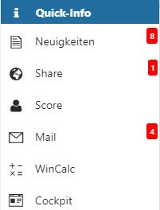
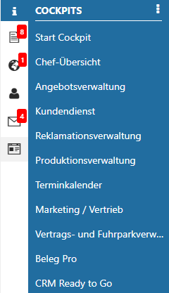
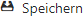
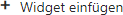
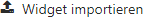

Die Quick-Info befindet sich im linken Bereich des Cockpits und weist auf ungelesene Objekte hin. Zusätzlich stehen diverse Cockpit-Funktionen zur Verfügung.
Ungelesene Objekte

In der Quick-Info wird auf ungelesene Objekte aus den folgenden Bereichen hingewiesen:
ü Neuigkeiten
Es wird die Anzahl
der ungelesenen News und Patchinformationen dargestellt.
ü Share
Es wird Anzahl der
ungelesenen Nachrichten dargestellt.
ü MesoMail
Es wird die Anzahl der
ungelesenen E-Mails, abhängig von den eingebundenen Konten und Ordnern des
Benutzers, angezeigt.
Hinweis
Für die Anzeige der ungelesenen Mail muss die Option "Anzahl neue Mails in Quick-Info anzeigen" in den "Einstellungen…" der WinLine START aktiviert worden sein.
Neben dem optischen Hinweis können die Programme per Klick gestartet werden, wobei auch der Start des WinLine Score und des WinCalc zur Verfügung steht.
Cockpit

Über die Auswahl "Cockpit" werden alle zugeordneten Cockpit angezeigt.
Ø Cockpitwechsel
Durch Anwahl eines Cockpits wird ein direkter Wechsel initiiert und das gewünschte Cockpit geladen.
Hinweis
Der Cockpitwechsel steht in der WinLine INFO nicht zur Verfügung. Des Weiteren können SMART-Benutzer ebenfalls keine Cockpits wechseln.
Ø - Menü
Über das Menü des Bereichs "Cockpit" werden folgende Funktionen zur Verfügung gestellt:
ü

Hinweis
Die Größe und Position von Elementen wird benutzerbezogen gespeichert. Widget-Einstellungen hingegen werden in der Cockpit-Definition abgelegt, wobei das Objektrecht "bearbeiten" (oder höher) für das Cockpit vorhanden sein muss.
ü
Durch Anwahl dieser Funktion wird der
gesamte Inhalt des Cockpits aktualisiert und neu aufgebaut.
ü

Hinweis
Zur Nutzung dieser Funktion muss das Objektrecht "bearbeiten" (oder höher) für das Cockpit vorhanden sein.
ü

Hinweis
Zur Nutzung dieser Funktion muss das Objektrecht "bearbeiten" (oder höher) für das Cockpit vorhanden sein.